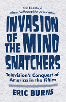

How the baby boomers learned about the world in their most formative years
How the baby boomers learned about the world in their most formative years


 How the baby boomers learned about the world in their most formative years
How the baby boomers learned about the world in their most formative years

|  |
Invasion of the Mind SnatchersTelevision's Conquest of America in the FiftiesEric Burnscloth EAN: 978-1-43990-288-2 (ISBN: 1-4399-0288-7) |
"Eric Burns' book is delightfully entertaining and richly informative. As a lifelong consumer and perpetrator of television programming, I consider it essential reading."
—Richard Thomas, actor
When the first television was demonstrated in 1927, a headline in The New York Times read, "Like a Photo Come to Life." It was a momentous occasion. But the power of television wasn't fully harnessed until the 1950s, when the medium was, as Eric Burns writes, "At its most preoccupying, its most life-altering."
In Invasion of the Mind Snatchers, Emmy-award winning broadcaster Eric Burns chronicles the influence of television on the baby boomer generation. Spellbound by Howdy Doody and The Ed Sullivan Show, those children often acted out their favorite programs, purchased the merchandise promoted by performers, and were fascinated by the personalities they saw on screen, often emulating their behavior. It was the first generation raised by TV, and Burns looks at both the promise of broadcasting as espoused by the inventors and how that promise was both redefined and lost by the corporations who helped spread this revolutionary technology.
Excerpt available at www.temple.edu/tempress
"Invasion of the Mind Snatchers offers the most comprehensive overview of television programming during the Fifties. Burns covers the most important programs and figures, ranging from Milton Berle and Bishop Fulton J. Sheen to Senator Joseph McCarthy and Edward R. Murrow. His lively writing style and choice of programs and genres provides an impressive synthesis of early television programming. There are many bold, intelligent and thought-provoking observations, opinions, and connections throughout this superb book."
—David Weinstein, author of The Forgotten Network: DuMont and the Birth of American Television
"Eric Burns, a bona fide TV historian, has pulled off a difficult task—he has brought our early, grainy television history to life in living color. His book is a tour of our times, from cowboys and Indians, and scoundrels and healers, to televised hearings and game show hosts. Invasion of the Mind Snatchers is a television-lover's portrait of how we got here, for better or worse, and Burns reminds us that what we were watching all those years was our own history unfolding."
—Brian Williams, Anchor and Managing Editor, NBC Nightly News
"[A]n entertaining as well as informative book.... Burns provides sharp analysis, explaining just how the industry exercised unprecedented power over the average American’s thoughts about news events such as the McCarthy hearings, social changes such as civil rights protests, and the roles of women and African Americans. This well-researched book contains a nice combination of serious topics and humorous anecdotes, plus an insightful bibliography. VERDICT: Reading a work by Burns is like having a delightful, intelligent conversation with a cultural expert. Highly recommended for TV history enthusiasts as well as general readers."
—Library Journal
"Burns' lively retrospective glides smoothly through [its] stories."
—The Wilson Quarterly
"[T]his is an entertaining, easy read for those who want to learn more about the story of television in the US. Summing Up: Recommended."
—CHOICE
"Invasion of the Mind Snatchers is a wholly entertaining, intelligent and thought-provoking work, one which will appeal to both media historians intent on tracing and understanding the impact of television as well as those more interested in reliving the bygone faces and shows of an earlier era."
—Mollie Lane Communications
"Burns elucidates the many ways television revolutionized the practice of everyday life....[It] is a certainly a fun and entertaining read."
—History: Reviews of New Books
A Note to Readers
Introduction: Philo T. Farnsworth’s Discontent
Part I: The Medium
1. Damning the “Theenk”
2. The New American Family
3. The Hula Hoop and the Bomb
4. Invisible Doughnuts and Coonskin Caps
5. “Really Big Shows”
6. The Competition
Part II: The Messages
7. The First Senator
8. The Second Senator
9. The Third Senator
10. Advertising for President
11. The Mystic Knights of the Sea
12. “The Technological Equivalent of a Crucifix”
13. Sexless Objects
14. The Constant Parade
15. Serving the Sky Chief
16. The Black Sox of the Airwaves
Epilogue: The Man with a Secret
Notes
Bibliography
Acknowledgments
Index
 | Eric Burns is a cultural historian and former television journalist. He was named by the Washington Journalism Review as one of the best writers in the history of broadcast journalism. His books include The Spirits of America: A Social History of Alcohol, and The Smoke of the Gods: A Social History of Tobacco (both Temple), which were named the "Best of the Best from University Presses" by the American Library Association. He is also the author of Broadcast Blues, The Joy of Books, and Infamous Scribblers: The Founding Fathers and the Rowdy Beginnings of American Journalism. |
Mass Media and Communications
American Studies
Cultural Studies
© 2015 Temple University. All Rights Reserved. This page: http://www.temple.edu/tempress/titles/2098_reg.html.